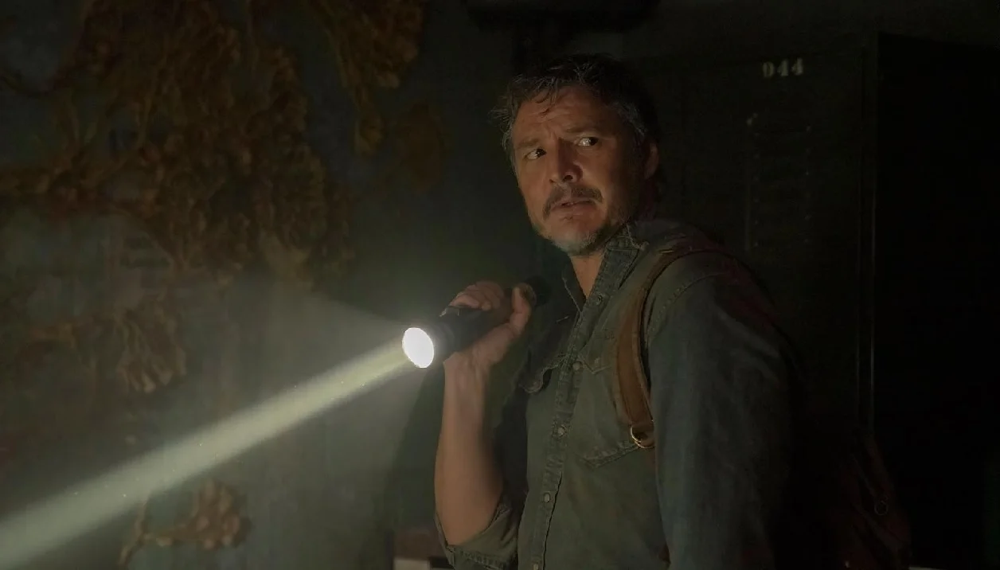

Play the audio for a better experience!
As clarified before, The Last of Us it is a game that was devastated by a pandemic caused by the fungus. Cordyceps, which, when infecting humans, turns them into its slaves, keeping them alive but unconscious. The fungus reproduces by biting other humans, and when bitten, they turn into cannibalistic beasts whose sole objective is to bite other people.

Joel and Ellie are forced to take refuge in a quarantine zone when they are attacked by infected
individuals.
The episode ends with Joel and Tess discussing Ellie's safety. Tess is concerned that Ellie is too
young to participate in this dangerous mission, but Joel insists that she is the only one who can
help them find a cure.
The episode begins with Joel and Ellie camping in the wilderness, 10 miles west of Boston. They are
still recovering from Tess's death, and Joel is taking out his anger on Ellie. Ellie tries to reason
with him, but he is not receptive.
where they meet Bill, a friend of Joel who lives in a fortified town.
After abandoning their truck in Kansas City, Joel and Ellie try to escape the city without drawing attention from a rebellion against FEDRA.
While Joel and Ellie try to evade the rebels, they come across the most wanted man in the city, along with his younger brother, Henry, and Sam. This chapter has a devastating ending that is very impactful.
While Joel is badly injured, Ellie begins to reminisce about "The Last Night That Was Happy."
Riley and Ellie make their way stealthily into an abandoned building, where they find a corpse and
some leftover alcohol. Meanwhile, Riley tells Ellie all about Marlene and the other Fireflies, but
Ellie tells Riley that FEDRA may not be as bad as they think.
Ellie encounters a group of religious survivors, but they are hiding a macabre secret. Ellie has to take care of Joel while also hiding from these survivors.
The episode begins with the birth of Ellie. Her mother, Anna, during childbirth, fights against an
infected individual, and although she manages to defeat it, she gets bitten. This is the reason why
Ellie is immune to the fungus.
Cordyceps.
After a long journey, Ellie and Joel arrive at the Fireflies' hospital. They are received with
hostility, and Joel is knocked out. He learns about their plans and decides to fight for his and
Ellie's lives.